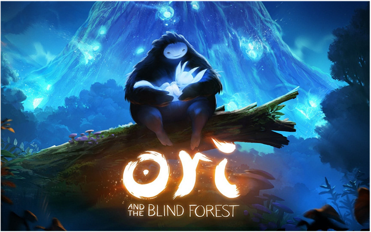
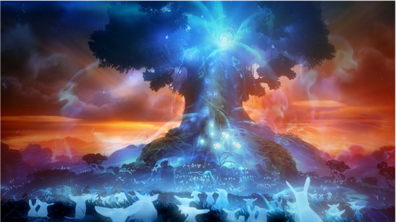
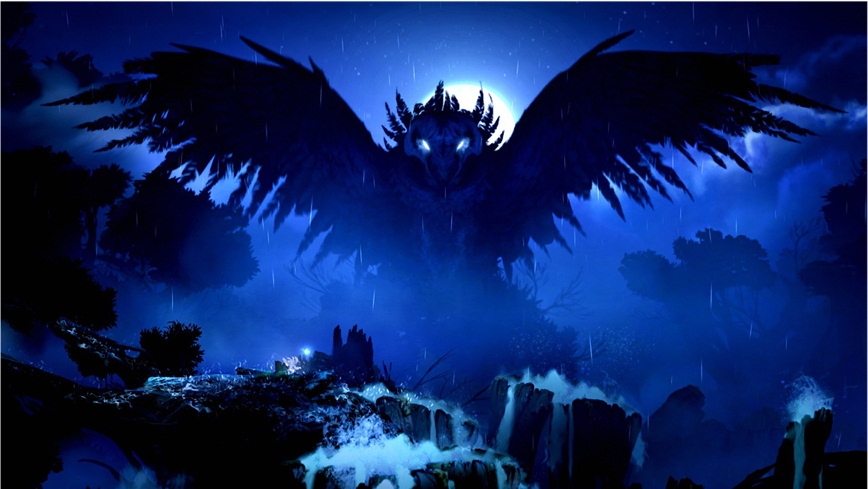

Ori and the Blind Forest — видеоигра в жанре платформер, разработанная студией Moon Studios и изданная Microsoft Studios для платформ Windows и Xbox One. Игра написана на игровом движке Unity. Выпуск игры для платформ Windows и Xbox One состоялся 11 марта 2015 года.

Игра представляет собой двухмерный платформер. Игрок управляет персонажем по имени Ори (сказочное существо белого цвета) и защищающим его духом по имени Сейн — сгустком энергии, который следует за Ори. С помощью Сейна можно атаковать врагов, в которых он (по нажатии левой кнопки мыши, клавиши «X» на клавиатуре или кнопки геймпада) выпускает заряды «духовного пламени». Кроме того, Сейн может сделать кратковременный мощный выброс энергии (на что тратится ресурс), поражающий всех врагов поблизости от Ори и разрушающий некоторые объекты. Сам Ори изначально умеет только прыгать, но в процессе игры он сможет научиться карабкаться по стенам, нырять под воду, парить в воздухе, совершать двойные-тройные прыжки и использовать энергию, чтобы выстреливать собой или отталкивать врагов и предметы.
Игровая карта, представляющая различные участки леса, загружается целиком, и игрок волен идти туда, куда ему хочется, однако, не открыв определённую для данного участка леса способность героя, игрок в любом случае не сможет туда попасть.
Изначально игрока выбрасывают в игровой мир без каких-либо пояснений о том, что нужно делать, и методом проб и ошибок необходимо искать решение самостоятельно. После того как игрок найдёт Сейна, он уже будет получать некоторые подсказки от него.
Игровая механика Ori and the Blind Forest хорошо проработана, создатели игры совершенствовали её полтора года. У Ори есть показатель здоровья и показатель энергии, представленные в виде ячеек. Изначально Ори очень слаб, поэтому имеет всего три ячейки здоровья и одну ячейку энергии. Во время исследования мира игрок будет находить дополнительные ячейки для этих показателей. Убивая врагов и находя очки умения, способности Ори можно будет улучшать.
Всего доступно три направления развития персонажа, которые допускается прокачивать одновременно. Одно из них отвечает за боевые навыки, второе — за совершенствование поиска тайников, третье — за вспомогательные способности (подводное дыхание, уменьшение затрат ресурсов при выполнении каких-либо действий и т.д.).
Игрок может сохраниться в любой момент игры, что является также частью игрового процесса, так как в игре контрольные точки расставлены на карте очень далеко друг от друга, и после игровой смерти придётся начинать с последней. На сохранение игры тратится ячейка энергии, поэтому игрок сначала вынужден сохраняться избирательно. Ближе к концу игры, когда ячеек, как правило, становится больше, сохранение уже не представляет проблемы.
«Лес Нибела умирает. После того, как мощный шторм запустил цепочку разрушительных событий, наш бесславный герой должен отправиться в путь, чтобы найти свое мужество и сразиться с заклятым врагом, чтобы спасти свой дом. Ori and the Blind Forest рассказывает о судьбе юного сироты, которому предначертана судьба героя, в невероятно красочном экшн-платформере, разработанном Moon Studios для ПК. Игра Ori and the Blind Forest отличается нарисованными вручную изображениями, невероятной анимацией персонажей и хорошо проработанной системой набора очков, и представляет собой глубоко эмоциональный рассказ о любви и жертвенности, а также о надежде, живущей в каждом из нас.»
Описание игры в Steam

Ori and the Blind Forest разрабатывалась 4 года студией Moon Studios. Один из ведущих разработчиков — Томас Малер — в прошлом работал в Blizzard Entertainment. По данным продюсера Microsoft Даниэля Смита, студия Moon Studios не сосредоточена в каком-то одном месте: разработчики находятся в разных уголках мира, таких как Австрия, Австралия, Израиль, США и другие страны. Программист Дэвид Кларк заявил, что «Ori and the Blind Forest» — это дань уважения таким классическим приключенческим играм, как Rayman и Metroid.
При написании сюжета разработчики руководствовались такими произведениями, как «Король Лев» и «Стальной гигант»: в частности, сцена, в которой умирает Нару и её оплакивает Ори, в ключевых моментах копирует сцену смерти Муфасы, а самопожертвование Куро повторяет финальную сцену в «Стальном гиганте». Сама игра написана на игровом движке Unity. Действие игры происходит на одной большой карте без видимых подгрузок частей игрового мира, поэтому перед игрой необходимо выждать достаточно длительную загрузку. Как утверждают разработчики, ни один фоновый нарисованный элемент не дублируется.
Впервые игра была представлена на E3 2014 на презентации в Гален Центре. E3 было тем мероприятием, на котором все разработчики впервые встретились лицом друг с другом. Посетители выставки выстраивались в длинные очереди, чтобы опробовать демоверсию Ori and the Blind Forest.
После E3 Moon Studios анонсировали выход Xbox-версии игры в начале 2015 года. В ноябре 2014 Moon Studios объявила о планах отодвинуть выпуск для всех запланированных платформ, не упомянув, однако, ничего о платформе Xbox 360. Позднее они заявили, что вскоре состоится выход игры для этой платформы.
19 августа 2019 года, в рамках выставки Gamescom 2019, было объявлено, что Ori and the Blind Forest будет также выпущена на Nintendo Switch. Выпуск игры на данной платформе намечен на 27 сентября 2019 года.
По словам одного из ведущего разработчика Moon Studios Томаса Малера их первый большой проект Ori and the Blind Forest уже успел полностью отбить свои затраты на производство и произошло это в течение всего лишь какой-то недели после релиза, и намекнул, что франшиза может увидеть следующую часть.
«Мы и Microsoft не скрываем своего счастья: Ori and the Blind Forest удалось полностью отбить вложенный в него бюджет всего за неделю после релиза. Я бы даже не удивился, если в будущем какая-нибудь киностудия не решила бы приобрести права на экранизацию нашей игры, ведь она без сомнения отлично смотрелась на большом экране. И да, не стану отрицать, наша команда очень хочет сделать новый большой проект, и уже сейчас работает над пятью различными прототипами, которые, возможно, со временем станут полноценными играми. Мне бы хотелось рассказать вам чуть больше, но, к сожалению, по определённым причинам раскрывать всех подробностей относительно наших дальнейших планов я не могу.»
На момент декабря 2015 года на платформе Steam игра продалась в более чем 420 тысяч копий.

Ori and the Blind Forest получила признания критиков, особенно были отмечены визуальный стиль, игровая история, музыкальное сопровождение, исследование мира и дизайн игры.
«Одурманивающе красивый, интересный и по-своему глубокий платформер. Ori and the Blind Forest не держит вас за дурака и постоянно подкидывает новые испытания, но не теряет хватку: игра всегда ровно настолько сложная, насколько нужно.»
Игровой журнал «Игромания»
На ежегодном голосовании The Game Awards 2015 игра удостоилась первого места в категории «Лучший арт-дирекшн», а также второго места в категории «Лучший платформер», отстав всего на 1% от победителя Super Mario Maker — конструктора карт для игры Mario.
Посмотреть видео разработчиков о том, как создавалась музыка для игры можно ниже, а послушать сами саундтреки — здесь.